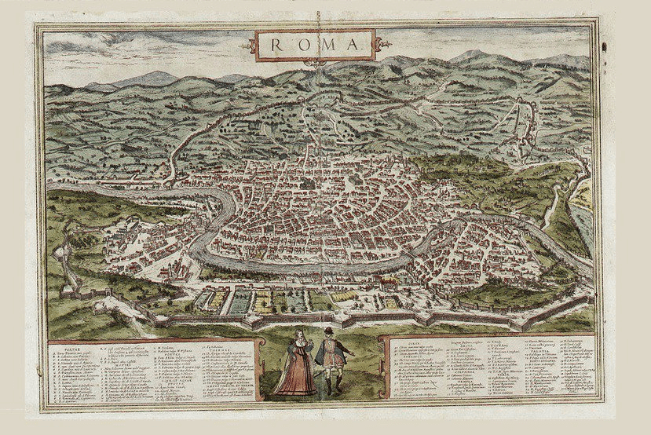

RIONI DI ROMA
羅馬分區 Rione（複數 Rioni）是羅馬市的傳統行政區劃分。 Rione 一詞從 14 世紀開始使用，起源於古羅馬時期拉丁文的 Regio，在中世紀演變成 Rejones。目前所有的分區都位於羅馬首都廣域市的市政一區 Municipio I 中。
Sannita,
CC BY-SA 4.0, via Wikimedia Commons
FIND A LOCATION
SELECT A RIONE